MAVIT · Vitín · jižní Čechy
Položeno na pevný podklad.
Obklady a dlažby, zámkové dlažby, kamenické a zednické práce. Dělám je od kufru po spáru — tak, aby za tři roky držely stejně jako první den.
Řemeslo
Od kufru po spáru.
Čtyři obory, které spolu na stavbě stejně vždycky souvisí. Když dělá podklad, pokládku i konečnou spáru jeden člověk, není koho se pak ptát, kde se stala chyba.
-
Koupelny, kuchyně, chodby, schodiště. Velkoformáty i rektifikované formáty, nivelace podkladu, hydroizolace v mokrých provozech, spárování na odstín. Ve starých domech, kde jsou zdi křivé, se to řeší srovnáním — ne tlustší spárou.
-
Vjezdy, chodníky, terasy, parkovací stání. Výkop, štěrkové lože, hutnění po vrstvách, obrubníky do betonového lože, spád do odtoku. Dlažba sedá tehdy, když se šidí podklad — a to je přesně ta část, kterou pak není vidět.
-
Kamenné obklady fasád a soklů, žulové kostky, parapety, schodové stupně a opěrné zdi. Kámen se skládá nasucho dopředu — aby spára a barevnost seděly dřív, než se namíchá lepidlo.
-
Omítky a štuky, opravy a přezdívky zdiva, příčky, zděné ploty, betonové podlahy a základové desky. Nejčastěji to, co si jinak musíte objednat u tří lidí zvlášť.
Dále dělám
Před a po
Rozdíl je vidět na hraně.
Čtyři zakázky, u kterých existuje fotka stavu před zásahem. Táhněte za posuvník — nic mezi tím není doretušované.
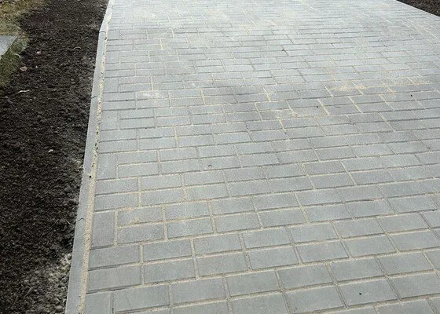
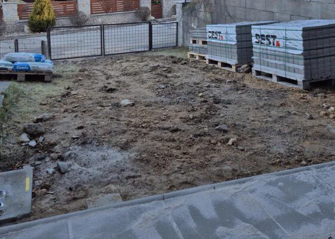
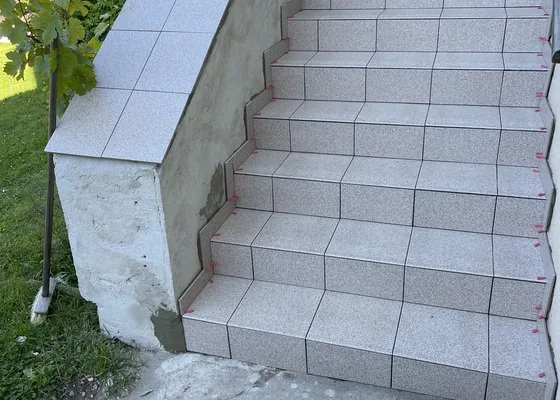
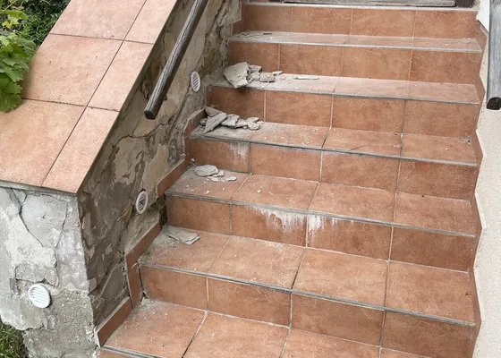
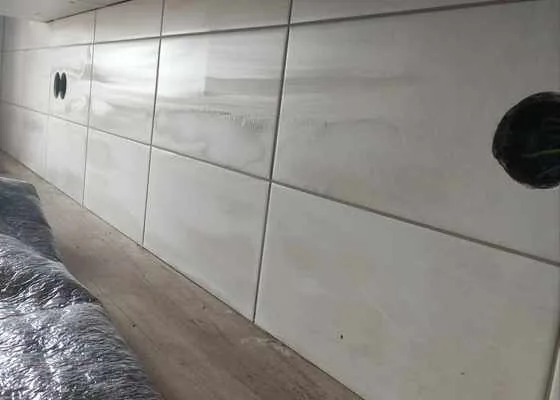
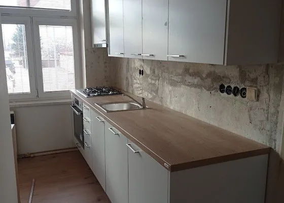
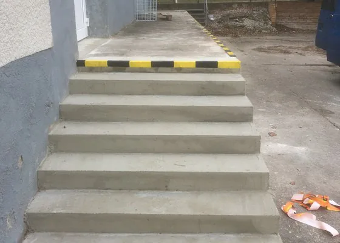
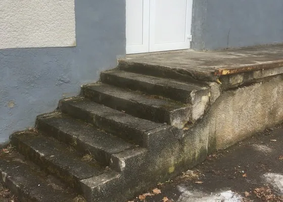
Realizace
Hotové zakázky.
Fotky z dokončených prací tak, jak byly předány zákazníkovi. Osm z nich je na NejŘemeslnících vedených jako ověřená ukázka práce.
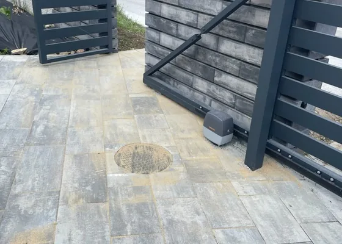
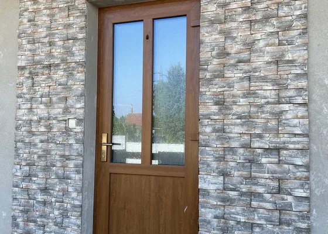
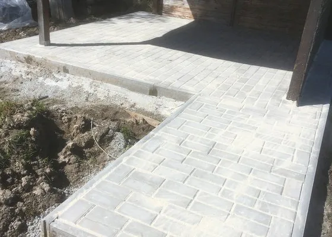
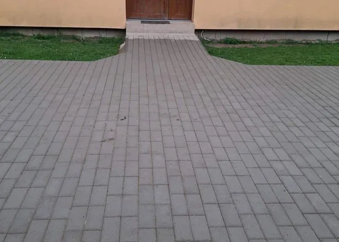
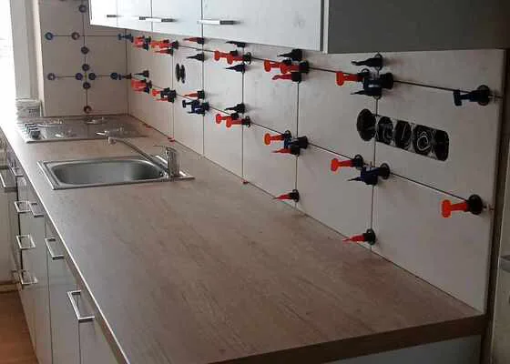
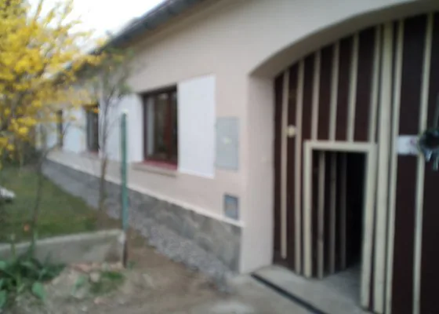
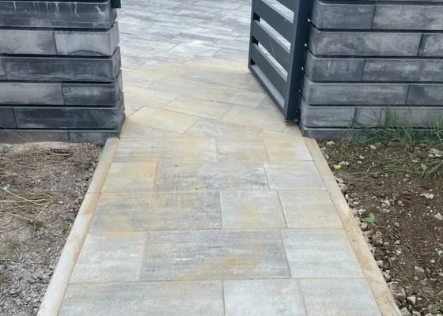
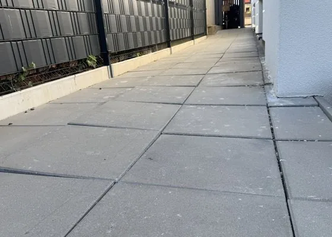
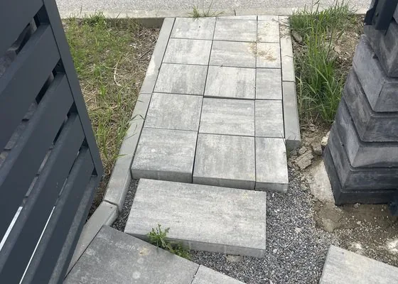
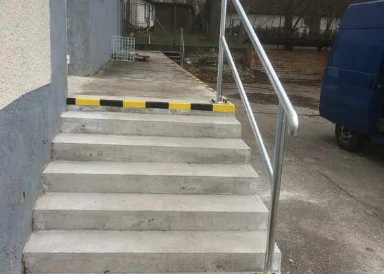
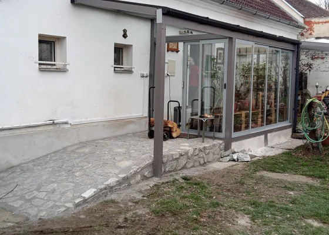
Postup
Pět kroků,
žádné překvapení.
Stejný sled u chodníku za dva dny i u kompletní terasy. Kdo ví, co bude následovat, nemusí kontrolovat každý den, jestli se něco děje.
-
01
Zaměření na místě
Přijedu se podívat, změřím a řeknu, co je potřeba udělat pod tím, co bude vidět. Zdarma a nezávazně.
-
02
Položková nabídka
Materiál, práce, doprava a odvoz zvlášť. Cena, na které se domluvíme, je cena na konci.
-
03
Podklad
Výkop, štěrkové lože, hutnění po vrstvách, obrubníky. Tady se rozhoduje, jestli dlažba za tři roky sedne, nebo ne.
-
04
Pokládka
Řezání na míru, spád do odtoků, spáry v jedné linii. Vzor se rozvrhne od pohledové hrany, ne od zdi.
-
05
Úklid a předání
Odvoz suti, zametení, srovnání terénu kolem. Předávám hotové, ne rozdělané.
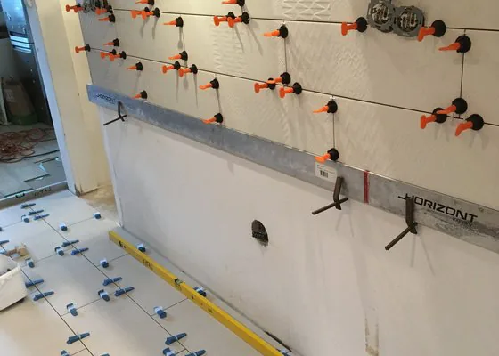
Kdo to dělá
Martin Vitásek,
živnostník z Vitína.
Pod značkou MAVIT dělám obklady, dlažby, zámkové dlažby, kamenické a zednické práce v jižních Čechách. Vitín leží mezi Českými Budějovicemi a Lišovem — do čtyřiceti kilometrů odsud jezdím za zákazníkem běžně.
Na portálu NejŘemeslníci mám ke dnešnímu dni 17 referencí a devět zákaznických hodnocení, z nichž osm je kladných. Většina zakázek jsou rodinné domy: vjezd, terasa, koupelna, schodiště, oprava fasády. Práce, u kterých se nedá nic zamluvit — buď je spára rovná, nebo není.
Reference
Co napsali zákazníci.
Hodnocení níže jsou doslovně převzatá z veřejného profilu na NejŘemeslníci.cz, kde je platforma ověřuje. Nepřepisoval jsem je.
5,0„S panem Vitáskem byla spolupráce bezvadná a rychlá — přijel se podívat, vyměřil, spočítal cenu a navrhl termín. Porovnali jsme všechny nabídky, které jsme dostali, a vybrali si jeho firmu. Vše bylo dodrženo, dlažba položena, uklizeno a nad rámec upravená zemina a zasetá tráva. Jsme naprosto spokojeni.“
5,0„Rychlá, kvalitní a velmi pěkně odvedená práce, u které je skvěle vidět, když někdo přemýšlí a snaží se odvézt maximum.“
5,0„Rychlé jednání a férová cena. Velmi dobře odvedená práce. Doporučuji.“
5,0„Perfektní rychlé jednání a provedení.“
4,7„Jednalo se o obložení koupelny a záchodu ve starém domě, takže byly zdi křivé. Řemeslník si s tím poradil dobře, byla s ním dobrá komunikace.“
4,7„Firma plnila veškeré dohodnuté závazky v termínu.“
4,3„Práce dobře odvedená.“
4,3„Vše v pořádku, ok.“
Kde pracuji
Vitín a čtyřicet kilometrů kolem.
Základna je ve Vitíně mezi Českými Budějovicemi a Lišovem. Dál než čtyřicet kilometrů nejezdím — na stavbě je lepší být ráno v sedm než v jedenáct.
Obce uvedeny orientačně v okruhu 40 km od Vitína. V Rudolfově a v Záboří u Protivína jsou doložené realizace.
Kontakt
Napište, co potřebujete.
Přijedu to změřit.
Nejrychlejší je telefon — na stavbě ho ale ne vždy slyším. Když napíšete rozměry a přiložíte fotku, ozvu se s nabídkou zpravidla do dvou dnů.
- Telefon +420 606 239 891
- E-mail vitas25@gmail.com
- Působnost Vitín · České Budějovice · do 40 km